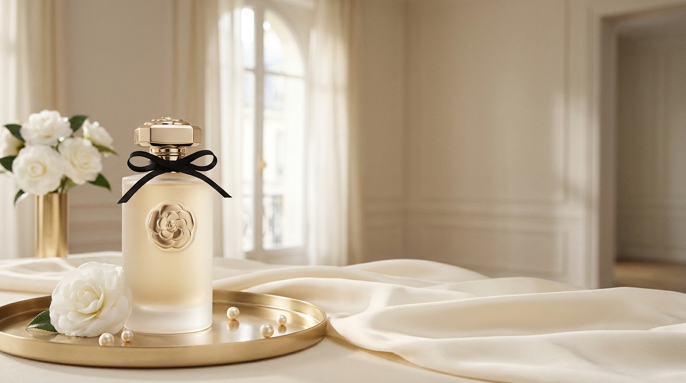
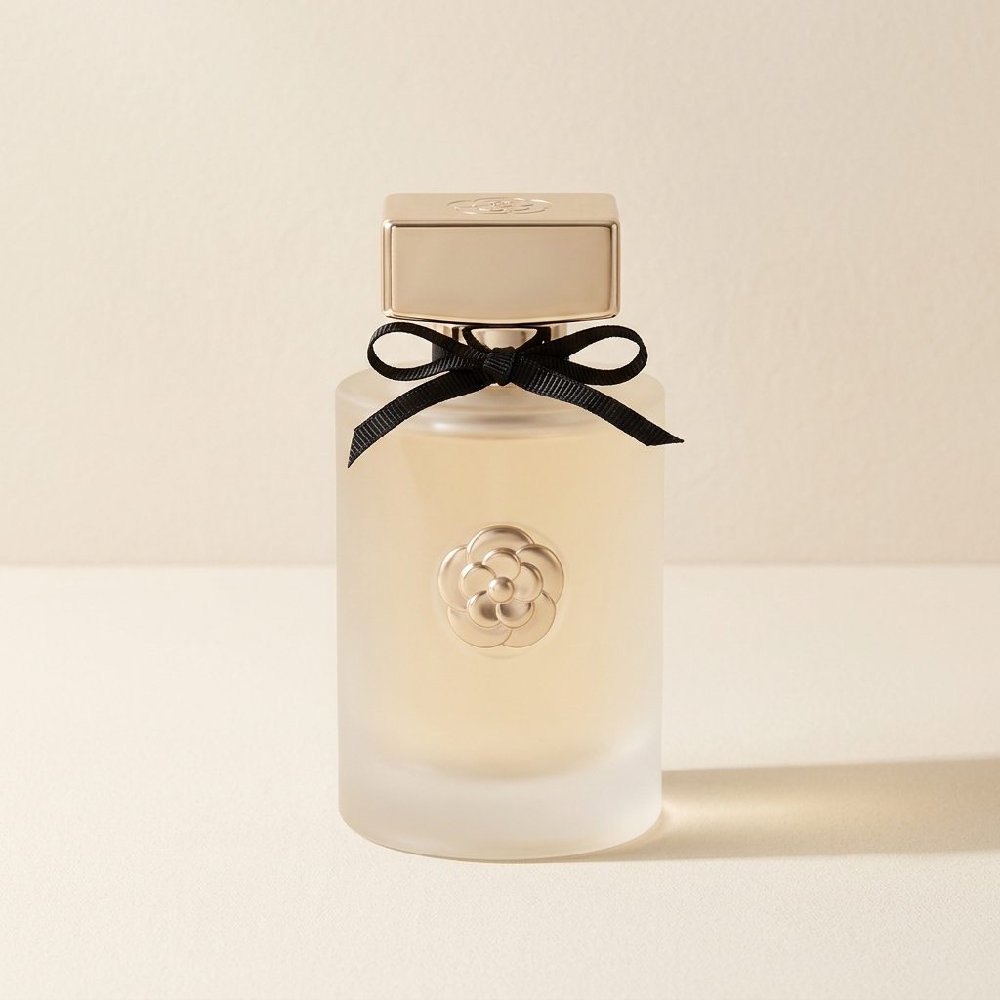
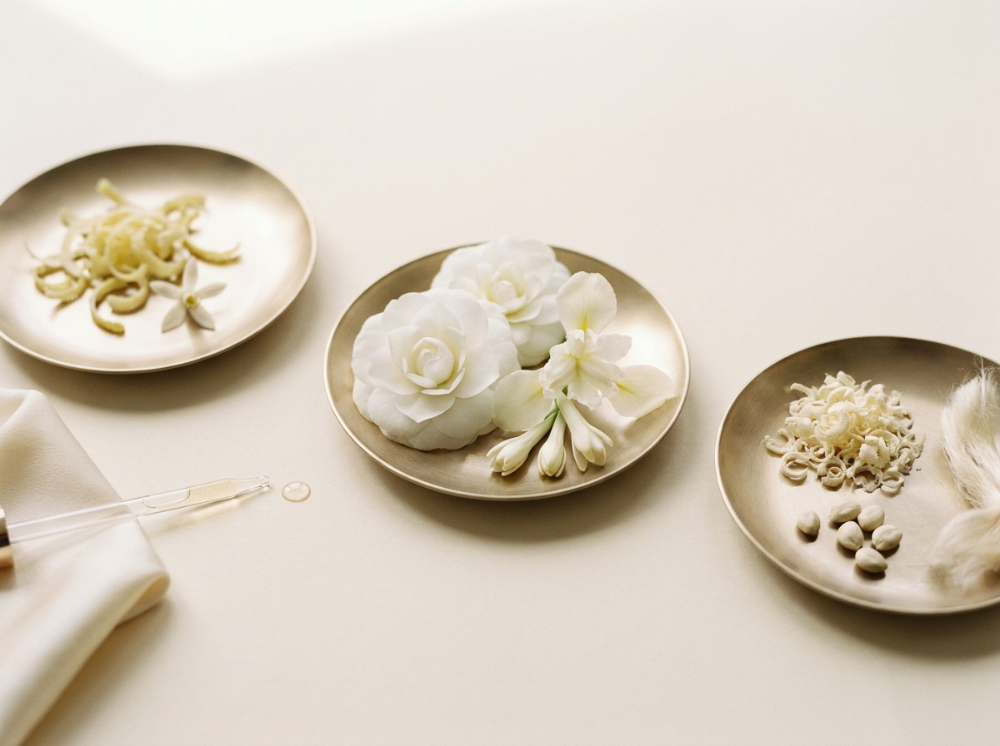
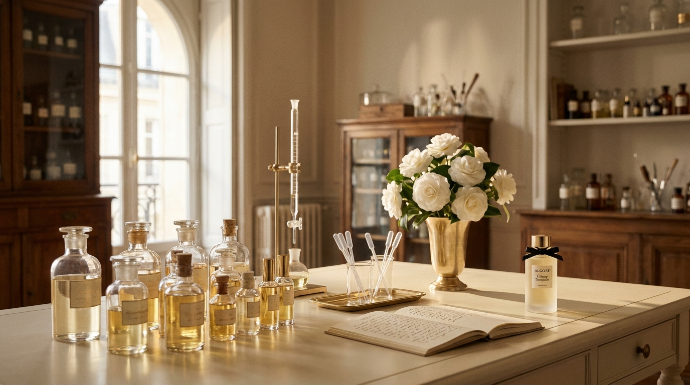

I.
Têtes — Top Notes
The First Hour
- Bergamote de Calabre
- Néroli de Tunisie
- Mandarine verte
베르가못, 네롤리, 그린 만다린 — 첫 시트러스의 가벼운 한 시간

« Un parfum n'est pas un objet.
C'est le temps qu'on accepte de porter sur soi. »
향수는 물건이 아닙니다. 우리가 몸에 두기로 한 시간입니다.

Les Notes
세 겹의 시간 — 한 가닥의 황금실

I.
The First Hour
베르가못, 네롤리, 그린 만다린 — 첫 시트러스의 가벼운 한 시간
II.
The Quiet Hour
화이트 카멜리아 · 아이리스 팔리다 · 그라스 자스민 · 화이트 튜베로즈 — 메종의 정중앙
III.
The Last Hour
화이트 머스크, 캐시미어 우드, 앰브렛 시드 — 마지막에 남는 한 시간의 따뜻함

L'Heure Tranquille was composed by Madame Hélène Bertier, the maison's sole perfumer, over a period of three years in her atelier in Grasse. Twelve versions were submitted; eleven were rejected. The final formula contains thirty-two raw materials — the same number as the maison's SS27 looks.
L'Heure Tranquille은 메종의 단독 조향사 마담 엘렌 베르티에가 그라스의 아틀리에에서 3년간 작업한 결과입니다. 12개의 버전이 제출되었고, 11개는 거부되었습니다. 최종 포뮬러에는 32개의 원료가 들어갑니다 — SS27 컬렉션의 32 룩과 같은 숫자.
그라스의 카멜리아 · 칼라브리아의 베르가못 · 튀니지의 네롤리 · 카슈미르의 우드. 자켓 한 점이 38시간이라면, 향 한 병은 3년이라는 시간을 입는 일입니다.
L'Histoire · The Story
« On compose un parfum comme on tisse une étoffe : on choisit d'abord la trame. »
The maison conceived its first fragrance as it conceives its tweeds — in three intentional layers. The base is the chaîne (the warp), the silent foundation that carries everything else. The heart is the trame (the weft), the visible identity. The top notes are the fil doré — the gold thread, the first signal that something has arrived. We do not believe in fragrances that smell of one thing. We believe in fragrances that smell of time.
메종은 첫 향수를 트위드를 짜듯 만들었습니다 — 의도된 세 겹으로. 베이스는 chaîne(날실), 모든 것을 떠받치는 조용한 토대. 미들은 trame(씨실), 눈에 보이는 정체성. 그리고 톱노트는 fil doré(황금실), 무엇인가가 도착했다는 첫 신호. 메종은 한 가지 향이 나는 향수를 믿지 않습니다. 시간이 나는 향수를 믿습니다.
L'Essai
« Le parfum se choisit sur la peau, pas sur le papier. »
향은 종이가 아니라 피부 위에서 고르는 것입니다 — 부티크에서 30분 시향을 예약하실 수 있습니다.
Book a Fragrance Consultation →